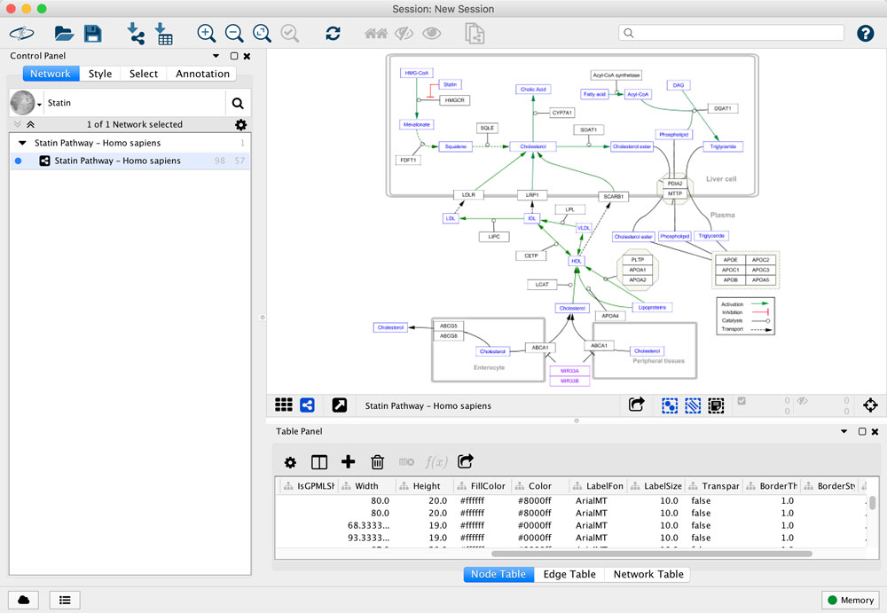
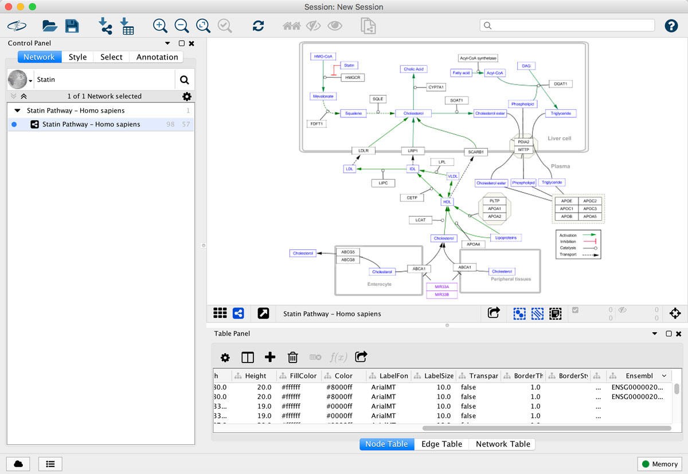

WikiPathways App
WikiPathways is a database of biological pathways maintained by and for the scientific community. Each pathway model in the database is annotated with database identfiers, which can be used for computation and data visualization.
This tutorial presents a basic workflow for visualizing experimental data on pathways in Cytoscape, using the WikiPathways App and the built-in ID Mapper functionality.

Prerequisties
- Install the latest version of Cytoscape
- Install the WikiPathways app via
Apps → App Manager - The ID Mapper app is installed with Cytoscape by default
- Download the data used in this tutorial. The data has been modified from Expression Atlas, and compares gene expression between individuals with homozygous familial hypercholesterolemia and normal individuals (log2 fold change values)
Importing Pathways
- Launch Cytoscape, and in the
Network Search Tool at the top of theNetwork tab in theControl Panel , selectWikiPathways in the drop-down. Type in "Statin" and click the search icon. - A list of results for all available species will open. To see results from a select species, click the Only checkbox and select a species from the drop-down.
- Select the human
Statin Pathway and clickImport as Pathway , or simply double-click the pathway in the list.

The pathway opens in Cytoscape with the original pathway layout and the WikiPathways style:

Identifier Mapping
Nodes in pathways from WikiPathways are annotated with identifiers from public databases, visible in the XrefId column in the Node Table. The Statin pathway is annotated with mostly Entrez Gene identifiers. Our experimental data is annotated with Ensembl identifiers, so we will map the Entrez identifiers on the pathway to Ensembl using ID Mapper.
- In the
Node Table , right-click on the column headerXrefId and selectMap column ... - This brings up the ID Mapper interface. ID Mapper guesses what the parameters are based on the pathway/network. In this case, we want to map from Entrez Gene to Ensembl:
- Setup the mapping and click
OK to continue.

- When mapping is complete, a new column named Ensembl is added to the Node Table.
- We are now ready to import the data.

Data Import
Now that we have added Ensembl identifiers to the pathway, we can use this new column to map the experimental data.
- Load the WPExpData.txt file under
File menu, selectImport → Table → File.... - Under
Where to Import Table Data , selectTo a Network Collection and select the relevant network collection in the second drop-down. - In the
Key Column for Network drop-down, select the newEnsembl column. - In the
Preview table, note that the Gene ID column is already selected as the key.
The data import interface should now look like this:

- Click
OK to import. - Once import is complete, look for the newly imported data columns in the Node Table to confirm that it worked.
Mapping Data to Visual Properties
We now have the data in Cytoscape, linked to the pathway, and ready to map to visual properties of the nodes in the network. We are going to visualize the fold change as Node Fill Color.
- In the
Style tab of theControl Panel , click theMap. box forFill Color . - In the
Column drop-down, select "hypercholesterolemia vs normal log2foldchange". - In the
Mapping Type drop-down, selectContinous Mapping . This will create a default color gradient from blue (negative fold change) to red (positive fold change):

Publish Results
Cytoscape provides a number of ways to save publication-quality images:
File → Export as Image... - SVG
- PNG (at any custom resolution)